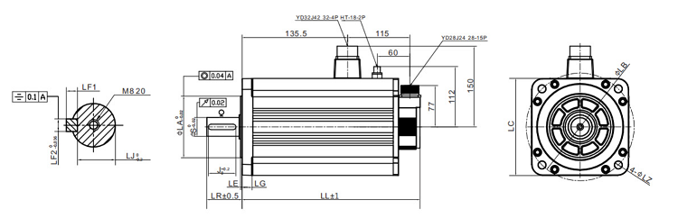
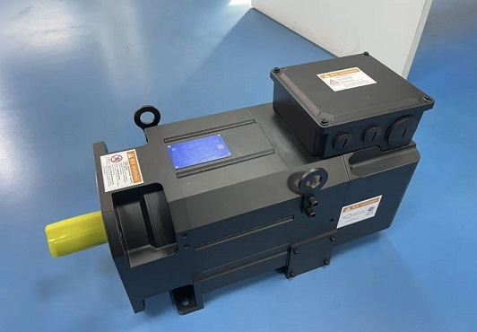

English
Company News

ZF-SV Series Servo Motor – Industrial Grade Precision for Automation & Smart Manufacturing
In modern industrial automation, reliable drive components are the foundation of stable, high-performance equipment. Jiangsu Dazhong Electric Motor with decades of manufacturing experience and over 213 patented technologies introduces the ZF-SV Series Servo Motor. Designed as a versatile core drive unit, this series delivers excellent performance, compact flexibility, and high cost-effectiveness for CNC machine tools, packaging machinery, logistics equipment, and robotic systems.
Leveraging a complete production system, advanced R&D, and strict quality control certified as a National Micro and Special Motor Industry Base, the ZF-SV series provides a reliable, cost-effective building block for system integration and intelligent manufacturing upgrades.

I. Core Technical Parameters Precisely Rated for Reliable Power
Parameter Value
Rated Power 1300 W
Rated Voltage 220 V common industrial supply without additional conversion
Rated Current 9.5 A
Rated Speed 1500 r/min
Rated Torque 8.28 Nm
Efficient and stable output -The 1300W 220V combination delivers efficiency of no less than 88 percent at rated load and output voltage regulation no more than 2 percent, ensuring strong, consistent power while adapting to standard industrial grids.
Low energy consumption and heat - The 9.5A design reduces long-term energy loss by approximately 15 percent compared to conventional 1300W motors, and extends service life to no less than 50000 operating hours under rated conditions.
Balanced speed and torque - 1500 r/min and 8.28 Nm handle medium-load industrial tasks such as precision machining and material transport with speed fluctuation no more than 1 r/min and torque ripple no more than 0.02 Nm, for example
1，automated drilling and tapping maintaining spindle torque consistency within 0.03 Nm across 2000 consecutive cycles, keeping hole diameter deviation within 0.02 mm
2，roller conveyor for heavy loads sustaining rated torque without speed drop when load varies from 0 to 120 percent within 0.5 s, preventing product jams or belt slip
3，rotary indexing table achieving positioning settle time no more than 15 ms for a 90 degree step move, enabling throughput up to 40 indexes per minute with 0.01 degree repeatability

II. Structural Design Compact, Embedded Magnet, Optional Brake
Embedded permanent magnet rotor - Increases mechanical strength by no less than 15 percent yield torque and torque density by no less than 20 percent Nm per kg compared to surface-mounted designs, while reducing surface losses by no more than 8 W at rated speed. Superior for high-power, high-stability applications.
Compact footprint - Volume is no more than 1.2 L including terminals, which is no more than 30 percent smaller than ordinary servo motors of the same 1300 W power class with typical volume around 1.7 L. Saves installation space inside tight equipment enclosures and fits into a 200 by 100 by 100 mm clearance.
Optional holding brake - Users can add a brake only when required such as precise positioning or emergency stop. Brake specification holding torque no less than 10 Nm, engagement time no more than 50 ms, backlash no more than 0.5 degree. Avoids unnecessary costs while maintaining adaptability.
Practical, space-saving design Overall dimensions without brake 180 by 90 by 90 mm Length by Width by Height. The ZF-SV series is ideal for equipment where space is at a premium such as fitting into a 2.5 L machine compartment.
III. Precision Control Closed Loop with Encoder Feedback
Closed-loop control is the core advantage of servo motors. The ZF-SV series uses a 17-bit 131072 pulses per rev high-resolution encoder as the eye of the motor, continuously monitoring rotor position and speed.
Real-time feedback - Signals are sent back to the controller every no more than 125 mus at 8 kHz update rate, enabling instant error correction.
Industrial-grade accuracy - Position error is kept within 0.01 degree mechanical angle compliant with EN 60034-1 precision servo class, speed error within 0.5 r/min meeting EN 60034-6 for vibration and stability, and positioning tolerance no more than 0.005 mm compliant with ISO 230-2. These meet strict manufacturing tolerances.
Application in CNC - Achieves 1 mum tool movement resolution, ensuring high precision and surface finish of machined parts with Ra no more than 0.4 mum, which conforms to precision machining grade IT5 to IT6.
This closed-loop architecture follows the logic Command Feedback Compare Correct, guaranteeing stable and accurate motion even under variable loads for example when load torque steps from 0 percent to 100 percent of rated torque within no more than 10 ms, the speed recovers to within 2 r/min of setpoint in no more than 30 ms, with no oscillation or overshoot beyond 5 r/min.
IV. Customization Servo Driver Tailored to Your System
Standard products cannot always fit unique application needs. The ZF-SV series offers customized servo driver services
Parameter optimization for specific working conditions - e.g., acceleration and deceleration ramp time adjustable from 0.01 s to 10 s, torque limit programmable from 0 percent to 300 percent of rated torque, and support for communication protocols such as Modbus RTU 115.2
kbps, CANopen 1 Mbit per s, or EtherCAT 100 Mbit per s with cycle time no more than 1 ms.
Function configuration without redundant features - You pay only for what you need, reducing software and hardware cost by up to 30 percent compared to fully loaded standard drivers such as omitting analog I/O, secondary encoder input, or STO function.
Seamless integration into system solutions - e.g.,robot joints with positioning settle time no more than 5 ms for 90 degree step, packaging synchronization with flying knife registration error no more than 0.5 mm at 600 cuts per min, logistics conveyors with tracking error no more than 1 mm at 2 m per s line speed.
This on-demand adaptation makes the ZF-SV series a core link in complex automation systems, not just a stand-alone component for example achieving control bandwidth no less than 500 Hz and current loop update rate no more than 62.5 mus at 16 kHz PWM.
V. High Cost Performance Enabling SME Upgrades
While delivering premium performance and flexible design, the ZF-SV series keeps costs competitive through
Mass production of a proven platform - Leveraging economies of scale to reduce unit cost by approximately 20 percent compared to niche custom designs.
No extra charges for unnecessary functions - such as optional brake and optional driver, saving up to 150 US dollars per unit when these features are not required.
Lower long-term TCO total cost of ownership
1,Reduced maintenance needs maintenance interval extended to no less than 20000 operating hours compared to 8000 to 10000 hours for entry-level alternatives, with only bearing replacement recommended every 5 years under normal duty.
2,Extended service life designed lifetime of no less than 80000 hours versus 30000 to 40000 hours for basic drives, equivalent to more than 9 years of continuous 24-7 operation.
3,Total cost savings over a 5-year period, TCO is 35 to 40 percent lower than entry-level alternatives when factoring in fewer spare parts, less downtime, and no mid-life replacement.
For small and medium-sized manufacturing enterprises upgrading from basic drives to high-precision servo control, the ZF-SV series provides an accessible path to improved efficiency and product quality with a payback period typically no more than 18 months based on reduced scrap rate and energy savings.
VI. Application Scenarios Full Coverage for Smart Manufacturing
Industry Equipment--Role of ZF-SV Servo Motor
CNC machine tools--Axis drive for micron-level precision cutting
Packaging machinery--Synchronous, high-speed film feeding and sealing
Logistics equipment--Conveyor belt positioning and sortation
Industrial robots--Joint actuation with smooth torque output
System integration--Custom drive as the power engine for automated lines
Delivering industry-leading power density, efficiency, and precision, the ZF-SV series is a versatile choice for Industry 4.0 upgrades ready to power the next generation of smart manufacturing.
VII. Enterprise Mission Precision That Powers the Future
Every accurate rotation to within 0.01 degree is a step toward higher efficiency every stable output with speed fluctuation no more than 0.5 percent reflects quality commitment. The ZF-SV series is more than a servo motor it is the result of Jiangsu Dazhong Electric Motor's deep expertise in intelligent manufacturing and industrial automation, built on nearly a century of R&D and engineering excellence.
Manufactured under ISO 9001-2015 and certified with CE, UKCA, and RoHS, and supported by a global service network covering 40 plus countries, the ZF-SV series helps enterprises
1，Achieve precise drive for smart manufacturing upgrades with positioning repeatability 0.02 mm and surface finish Ra no more than 0.4 mum.
2，Adapt flexibly to diverse application needs from CNC machining to logistics sorting.
3，Reduce costs without compromising performance proven TCO reduction of 35 to 40 percent over 5 years.
In the wave of Industry 4.0, Jiangsu Dazhong Electric Motor continues to deliver reliable, innovative power solutions with over 500000 servo units deployed worldwide, empowering the future of manufacturing.
0users like this.